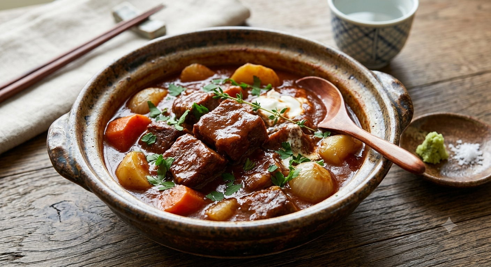
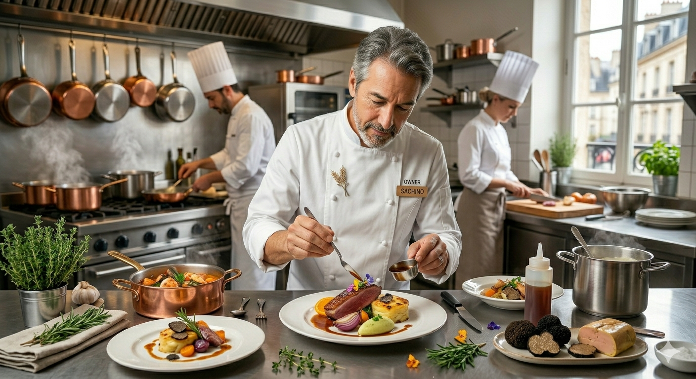
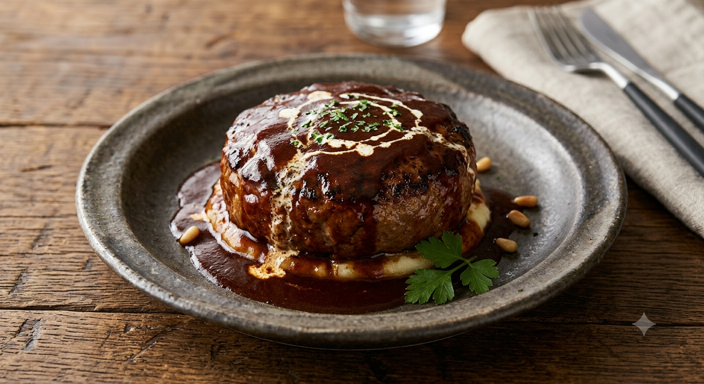
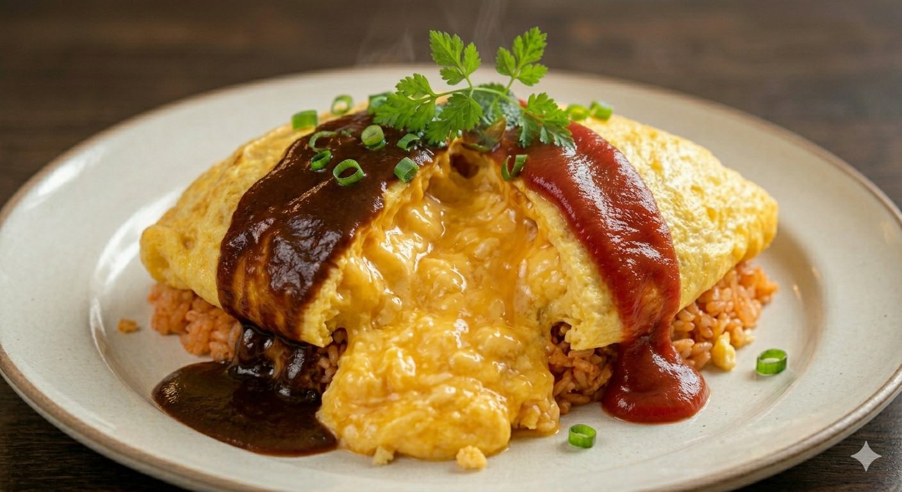
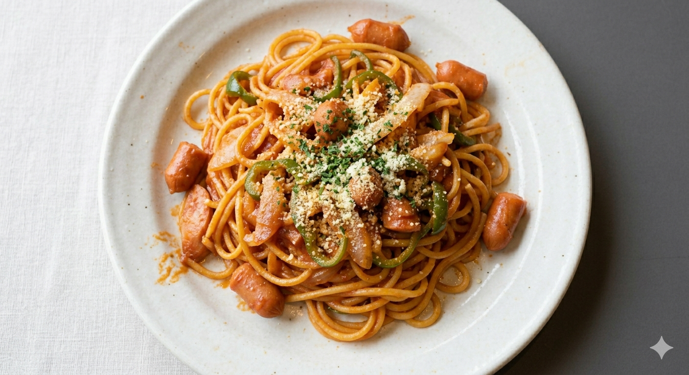
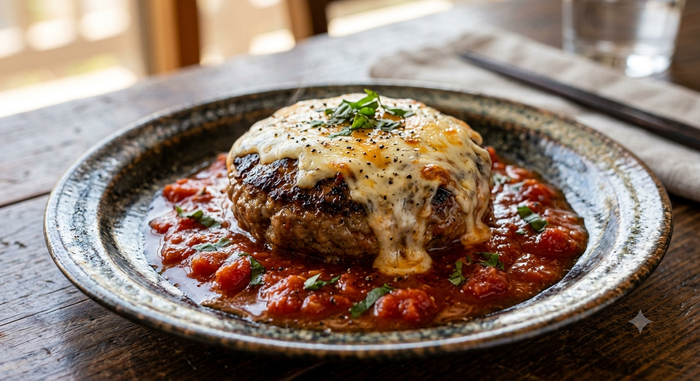
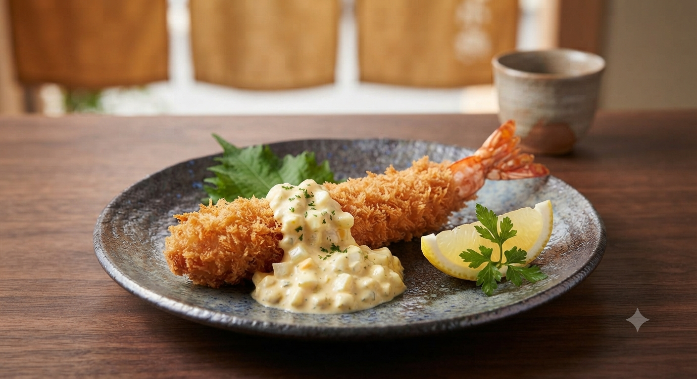

札幌・中央区静修学園前
四十余年、
継ぎ足し守る
至高の洋食。
Scroll

札幌・中央区静修学園前
Scroll

廣田 幸喜
Second Generation Master
「ラパン」とはフランス語でうさぎ。モンマルトルのカフェにちなんで名付けられたその名には、先代オーナーの「大勢の人が足しげく通う店にしたい」という素朴な願いが込められています。
二代目マスターとして厨房に立つ廣田は、かつてここで料理のいろはを学びました。その後、十年の研鑽を積んで帰ってきた彼が守るのは、ただのレシピではありません。
「あぁ、この味だ」と言っていただける、変わらない安心感。
そのために、毎日鍋と向き合い、ソースの声を聞き、40年の歴史を更新し続けています。
Finding Real Excellence

しょっぱすぎず、コク深い。料理ごとに微調整を加える伝統のデミグラスソースが、素材の旨味を何倍にも引き立てます。

熟練の火入れで作られるオムライスは、スプーンを入れた瞬間溢れ出す「ふわふわ」の魔法。一度食べれば虜になる食感です。

お一人様から家族連れまで。温かい手書きメニューと接客が、都会の喧騒を忘れさせる穏やかなひとときを演出します。
「絶対になくなってほしくない街の洋食屋さん」
カニクリームコロッケはカニしか入ってないじゃんってくらいカニがたっぷり！ハンバーグもデミソースもとっても美味しかった。大満足です。
「1983年から続く老舗、その理由がわかります」
王道のオムライスを頂きました。玉子はふわふわでチキンライスの味はスプーンが止まらなくなるほど美味しい！絶対また来たいと思いました。
忙しい日の夕食に、特別な日のホームパーティーに。
グリルラパンの人気メニューをテイクアウトでお持ち帰りいただけます。


皆様の食卓とひとときをより豊かに。現在準備中の新しいプロジェクト・サービスをご紹介します。
春の極太アスパラ、秋の道産きのこなど、北海道の豊かな四季の恵みを伝統のソースと融合させた「季節限定メニュー」を期間限定で展開します。
全国のお客様のご要望にお応えし、自慢のデミグラスハンバーグやビーフシチューの「真空冷凍ギフトセット」をオンラインショップにて準備中です。